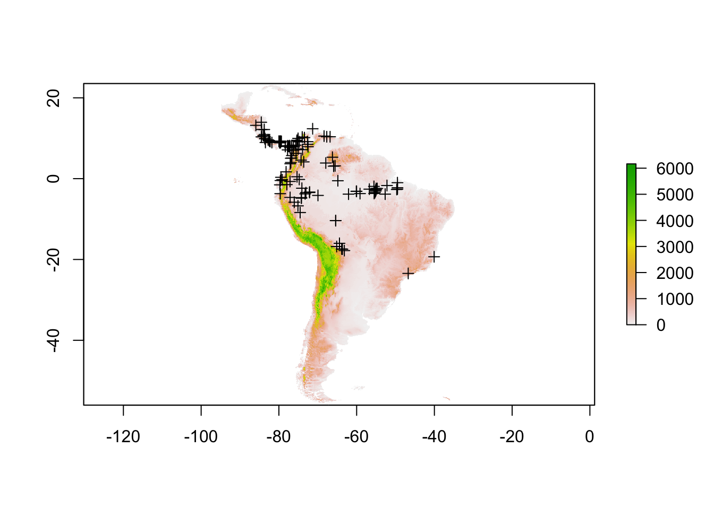
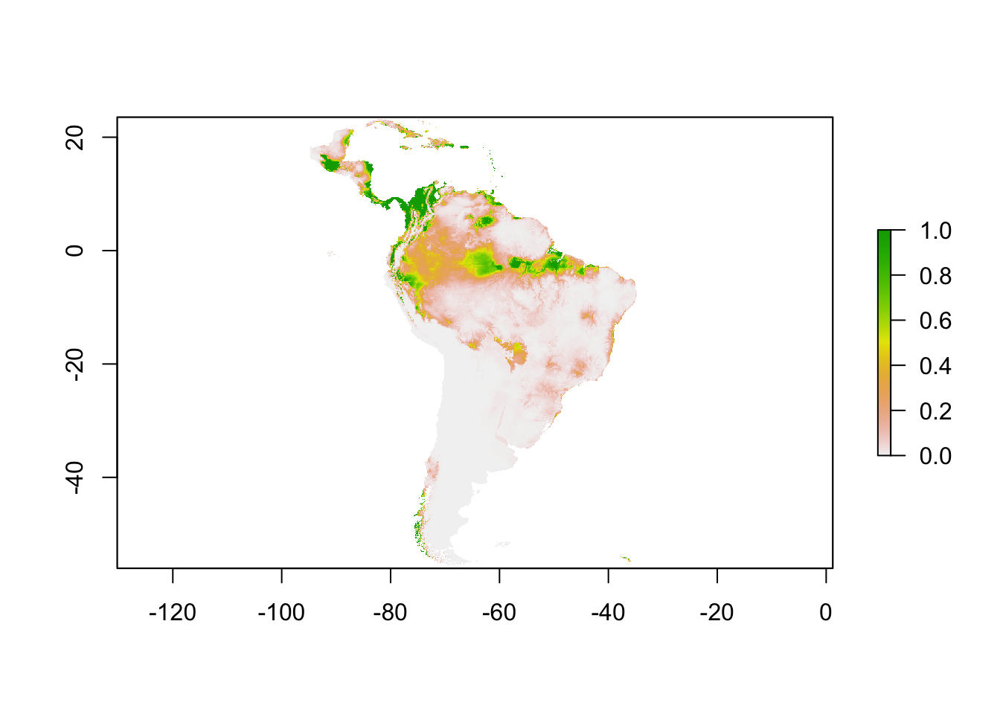

Maxent 3.40
Maxentとは
在データだけで分布予測をするすごいやつ。
不在データが取りにくい野生生物を対象とする生態学などで大人気です。
今回はバージョンアップでオープンソース化&Rパッケージがでたのでその紹介です。
くわしくは元論文を読みましょう?
Maxent website
Install
Rパッケージの名前注意してください。eとnが逆で、maxnetとなっています。maxentは別のやつです。
install.packages("maxnet")Data
チュートリアルテキストが、RのコードではなくJSのGUIの操作法になっています。
チュートリアルデータをダウンロードしてください。解凍後、ワーキングディレクトリを指定してください。
library(maxnet)
library(tidyverse)
library(magrittr)
library(raster)
d <- read_csv("samples/bradypus.csv") %>%
dplyr::select(-species) %>%
set_colnames(c("long","lat"))
p <- SpatialPoints(d[,c("long","lat")],proj4string = CRS("+init=epsg:4326"))
r <- stack(dir("layers",pattern = "asc$",full.names = TRUE))
crs(r) <- CRS("+init=epsg:4326")pとrにsp&rasterオブジェクトとして読み込みました。 pはノドチャミユビナマケモノBradypus variegatusの位置データです。 rは標高や気候などの説明変数のようです。プロットしてみましょう。
plot(r[["h_dem"]])
plot(p,add=TRUE)
plot(r)Run
Maxentは不在データの代わりに対象地域内に十分な数のランダムなポイントを落とし、それを“背景データ”として使います。
GUIのソフトの方は上のようなGISデータ形式そのまんまで解析してくれますが、
Rパッケージの関数の方はglmnetのラッパーみたいなので、位置情報から説明変数を取ってきてあげないといけません。
train <- raster::extract(r,p) %>%
data.frame(.,presence = 1)
set.seed(123)
bg <- sampleRandom(r,1000,na.rm = TRUE) %>%
data.frame(.,presence = 0)
d <- rbind(train,bg) %>%
filter(complete.cases(.))元のラスターが陸地と気象データのNAの箇所が微妙に違うようなのでNAを丁寧に取り除きます。
dにデータが揃ったので、モデルをつくって予測してみましょう。
mod <- maxnet(p = d %>% use_series(presence),data = d %>% dplyr::select(-presence))
r %>%
getValues() %>%
data.frame() %>%
mutate(n = row_number()) %>%
filter(complete.cases(.)) -> r_d
pre <- predict(mod,r_d %>% dplyr::select(-n),type="cloglog")Result
dplyrとrasterパッケージが噛み合わなくて色々つらいですが、ラスターにMaxentの結果を戻します。
preの中身は種の存在する確率となります。
pre_r <- r[[1]]
pre_r[] <- NA
pre_r[r_d$n] <- pre
plot(pre_r)
これでナマケモノの分布確率の地図が作れました。
AUCのプロットから2値化したり、CVしたりAICだしたり寄与率をみたいと思いますが、それはつぎの機会に!